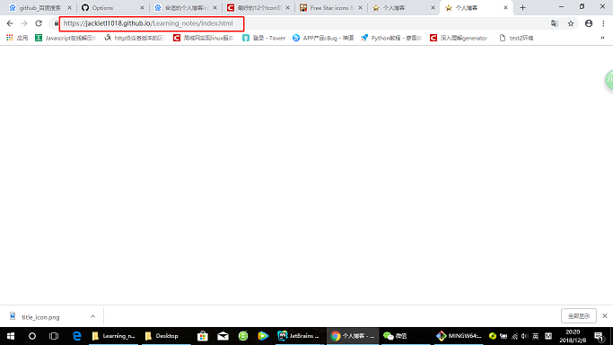
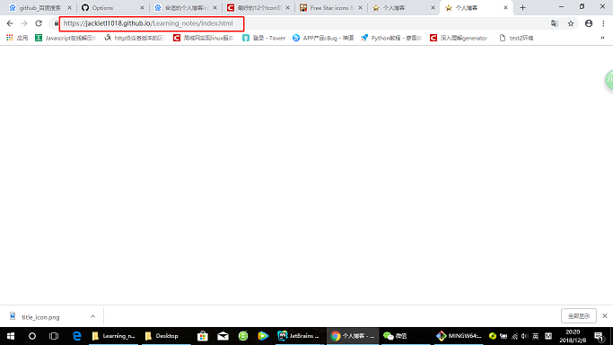

About Javascript
也可以这样定义数组：在创建数组的同时，为数组指定长度，长度可任意指定。
var myarr=new Array(8);
注意：
1.创建的新数组是空数组，没有值，如输出，则显示undefined。
2.虽然创建数组时，指定了长度，但实际上数组都是变长的，也就是说即使指定了长度为8，仍然可以将元素存储在规定长度以外。
定义数组，给数组赋值，我们可以“一气呵成”将这两步合为一步
第一种方法：
var myarr=new Array(66,80,90,77,59);
第二种方法：
var myarr=[66,80,90,77,59];
获得数组的长度和获得字符串长度是一致的：
二维数组相关
1.二维数组的定义方法一
var myarr=new Array() //先声明一维
for(var i=0;i<2;i++){ //一维长度为2
myarr[i]=new Array(); //再声明二维
for(var j=0;j<3;j++){ //二维长度为3
myarr[i][j]=i+j; //赋值，每个数组元素的值为i+j
}
}
2.二维数组的定义方法二
下面这种方法定义的数组和方法一中定义的数组完全一样，两行三列的一个数组
var myarr=[[0,1,2],[1,2,3]];
当有很多种选项的时候，switch比if else 使用更方便
语法：
switch(表达式)
{
case值1:
执行代码块 1
break;
case值2:
执行代码块 2
break;
...
case值n:
执行代码块 n
break;
default:
与 case值1 、 case值2...case值n 不同时执行的代码
}
语法说明：
Switch必须赋初始值，值与每个case值匹配。满足执行该 case 后的所有语句，并用break语句来阻止运行下一个case。如所有case值都不匹配，
执行default后的语句。
下面是switch语句的执行效果：
什么是事件
JavaScript 创建动态页面。事件是可以被 JavaScript 侦测到的行为。 网页中的每个元素都可以产生某些可以触发 JavaScript 函数或程序的事件。
比如说，当用户单击按钮或者提交表单数据时，就发生一个鼠标单击（onclick）事件，需要浏览器做出处理，返回给用户一个结果。
主要事件表：


 



 History 对象方法
History 对象方法
 location对象属性:
location对象属性: location对象方法:
location对象方法: